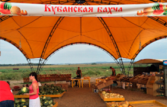

Фотографии пользователей
Список фотографий пользователей
Взгляните на фотографии, которые выкладывают пользователи! Видите, как не хватает ваших?
Анна(5 минут назад)
Прыгать или нет? Напишите в комментарии свой совет и смотрите прямую трансляцию в перископе, задавайте свои вопросы!
Нравится: 215
-

Левон
(5 часов назад)
Вчера он на луну летал, сегодня в руки к нам попал.
Нравится: 356
-

Антон
(12 часов назад)
Соседи будут рады!
Нравится: 666
-

Борис
(20 часов назад)
Здесь могла быть ваша цитата о высоком и вечном.
Нравится: 215
-
 Сергей
(25 часов назад)
Самая кубанская в мире!
Нравится: 4
-
Максим
(40 часов назад)
Где снег-то?
Нравится: 150
-
Надежда
(45 часов назад)
Всем GM и взаимные лайки!
Нравится: 2560
Мой пост
Затмите их всех!
Выкладывайте все, что накопилось в телефоне!